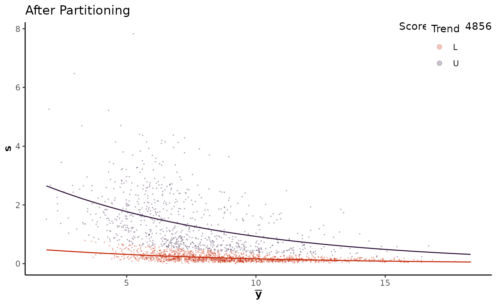

multi_trend_partitioning.RdPerforms multiple trend partitioning on the mean-variance trend and adds a new column classifying each peptide into a cluster.
multi_trend_partitioning(
data,
design_matrix,
formula = sd ~ mean + c,
h = 0.1,
verbose = 0,
penalty = p,
plot = TRUE
)A tibble or data.frame to partition
A design matrix for the data (see example)
Formula for the Gamma regression
Size of the integration window
Should the procedure be printed (1 for multi partitioning, 2 for multi and trend partitioning, 0 for no).
Penalty function for the penalized likelihood, defaults to p
Should a plot of the final solution be printed?
a tibble or data.frame with \(\boldsymbol{\hat{C}}\) added as a new column.
# Normalize data
design <- model.matrix(~ 0 + factor(rep(1:2, each = 3)))
colnames(design) <- paste0("ng", c(50, 100))
yeast_norm <- yeast %>%
psrn("identifier")
yeast_norm %>%
calculate_mean_sd_trends(design) %>%
multi_trend_partitioning(design)

#> $data
#> # A tibble: 2,235 × 11
#> identifier ng50_1 ng50_2 ng50_3 ng100_1 ng100_2 ng100_3 mean sd sd_p
#> <chr> <dbl> <dbl> <dbl> <dbl> <dbl> <dbl> <dbl> <dbl> <dbl>
#> 1 Cre01.g00045… 6.29 6.29 6.36 3.42 2.53 NA 4.98 1.86 0.364
#> 2 Cre01.g00080… 7.97 8.00 8.05 7.74 7.78 7.78 7.88 0.134 0.0328
#> 3 Cre01.g00205… 5.93 5.44 6.24 6.97 6.77 6.82 6.36 0.601 0.295
#> 4 Cre01.g00230… 6.53 6.23 5.89 6.52 6.45 6.19 6.30 0.246 0.254
#> 5 Cre01.g00230… 9.89 10.1 9.96 10.1 10.4 10.3 10.1 0.192 0.121
#> 6 Cre01.g00230… 9.09 8.88 8.64 10.0 10.1 10.0 9.46 0.665 0.162
#> 7 Cre01.g00435… 6.52 6.78 6.25 6.82 6.51 6.27 6.53 0.241 0.269
#> 8 Cre01.g00450… 1.85 NA NA 6.55 6.74 6.27 5.35 2.34 0.234
#> 9 Cre01.g00450… 12.1 12.1 12.1 11.9 11.8 11.8 11.9 0.155 0.0346
#> 10 Cre01.g00450… 8.10 6.95 5.11 9.54 9.59 9.55 8.14 1.83 1.07
#> # ℹ 2,225 more rows
#> # ℹ 1 more variable: c <chr>
#>
#> $score
#> [1] 324.5486
#>